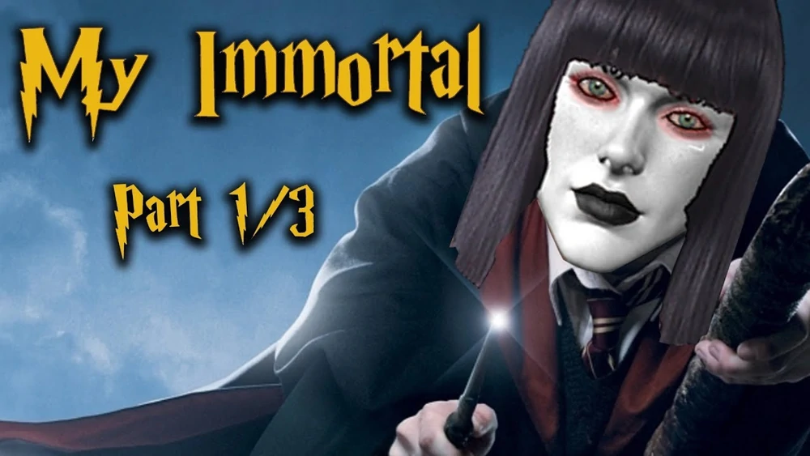
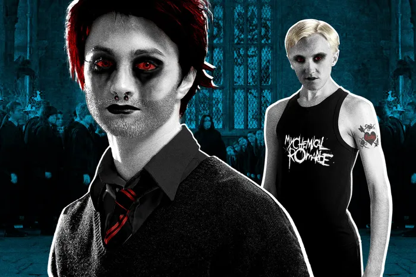
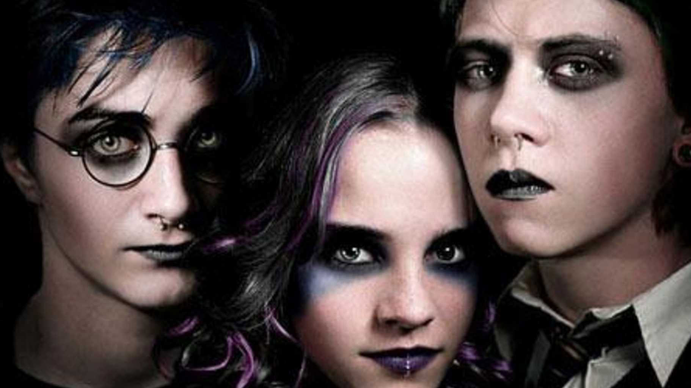
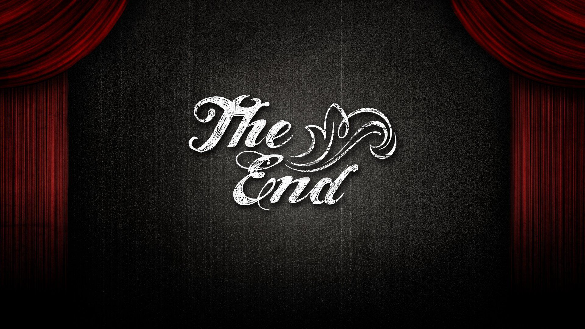

The story follows Ebony, a seventeen-year-old vampire who attends Hogwarts, as she enters a relationship with Draco
Malfoy. The two are discovered by headmaster Albus Dumbledore, who yells at them and derides them as "motherfukers".
Ebony later learns that Draco used to date Harry Potter. She becomes so angry at this perceived betrayal that she runs
into the Forbidden Forest, where Lord Voldemort approaches her. Voldemort gives her a gun and demands that she kill
Harry, but she refuses. When Draco later learns of this encounter, he is so angry that Ebony keeps it from him that he
kills himself. In a subsequent scene, however, Harry has a vision of Draco being held prisoner by Voldemort, and he
rescues Draco from Voldemort. Ebony and her friends then attend a My Chemical Romance concert in Hogsmeade. Still, the
show ends abruptly when the members of My Chemical Romance reveal themselves as Voldemort and his Death Dealers.
Dumbledore saves Ebony and Draco, and the next day he gives a gothic makeover to the Hogwarts Great Hall. During this
time, Lucian Malfoy and Serious Blak are inexplicably shot by a gun-toting "black guy." There is also a secondary plot
point in which Professor Trelawney / Professor Sinistra, combined into one character, has an addiction to what is
presumably the truth serum Veritaserum.
A third plot point sees Professor McGonagall and Snape attempting to rape or harm the protagonists. Yet another plot
point follows Remus Lupin and Snape being bisexuals who spy on Ebony. Ebony begins having mysterious visions, about
which she confronts Professor Sinister. After gazing into a black crystal ball, she is told she must travel back in
"tim" to stop Tom Riddle from becoming Voldemort by seducing him and to retrieve a cure for Sinister/Trevolry's
addiction. Arriving in the past, she meets the young Riddle, who calls himself "Satan" and who has been mistakenly
referred to as "Tom Bombodil," "Tom Anderson," and "Stan." Satan is in a band with James Potter, Severus Snape, Sirius
Black, and Lucius Malfoy. He is uncanonically depicted attending Hogwarts at the same time as the Marauders in what is
further uncanonically portrayed as the 1980s. Ebony eventually brings Satan forward in time, where he morphs into the
present-day Voldemort. This leads to a confrontation between the forces of good and evil in the Great Hall, in which
professor Snape threatens to rape Draco if Ebony does not stab Harry. The story ends ambiguously with a shootout between
Snape and Draco, Snape summoning Voldemort, and Ebony firing off an Avada Kedavra curse.

The work is characterized by misspellings permeating both the work itself and the author's notes, to the point that the
names of the protagonist and canonical Harry Potter characters are frequently and variously misspelled.[1][4] A 2011
analysis of the text found that it contains far more spelling mistakes (approximately 5,200) than grammar errors (nearly
700). Although the work does contain many grammar errors, the majority of the sentences are technically well-formed and
fairly complex in structure; "This contrast between [the author]'s grammatical talent and lexical disability makes the
reader aware that the author is capable of writing well, but unwilling to do so." The spelling mistakes also include
"provocative" malapropisms, replacing common words with unrelated and improbably rare vocabulary. For example:[5] I have
to tell you the fucking perdition. — Chapter 27, My Immortal (2006) Perdition, here replacing the word prediction,
refers to eternal damnation of the soul in Christian theology. This fits in with the story's gothic and sadist
themes.[5] The work notably fails to adhere to Harry Potter canon. It features "an incredibly out-of-character Harry
Potter universe" where "at no point do any of the Harry Potter characters act even slightly like themselves".[6][7]
References to "decidedly un-Harry Potterish bands" such as My Chemical Romance have also been noted.[4]

The text above tells the story of "My Immortal", a work of fan fiction published on FanFiction.net under the username
"XXXbloodyrists666XXX" by an author using the name "Tara Gilesbie". The work was published between early 2006 and 2007,
ultimately totaling 44 chapters and nearly 22,700 words. The forty-fourth chapter was accompanied by an author's note
explaining that the author was leaving "dubya", commonly believed to be Dubai, and the chapter would be the last until
the author's return. However, no further chapters were published. It was removed by site administrators in 2008, a few
months after its last chapter was published. The complete text survives in copied-and-pasted versions across the
Internet.

My Immortal is a work of fan fiction that is widely considered to be one of the worst pieces of writing ever published.
It tells the story of a teenage girl named Ebony Dark'ness Dementia Raven Way who is a student at a wizarding school.
The story is full of grammatical errors, Mary Sue characters, and plot holes. Despite its poor quality, the story was
popular on FanFiction.Net, receiving thousands of reviews. It has since been removed from the site.